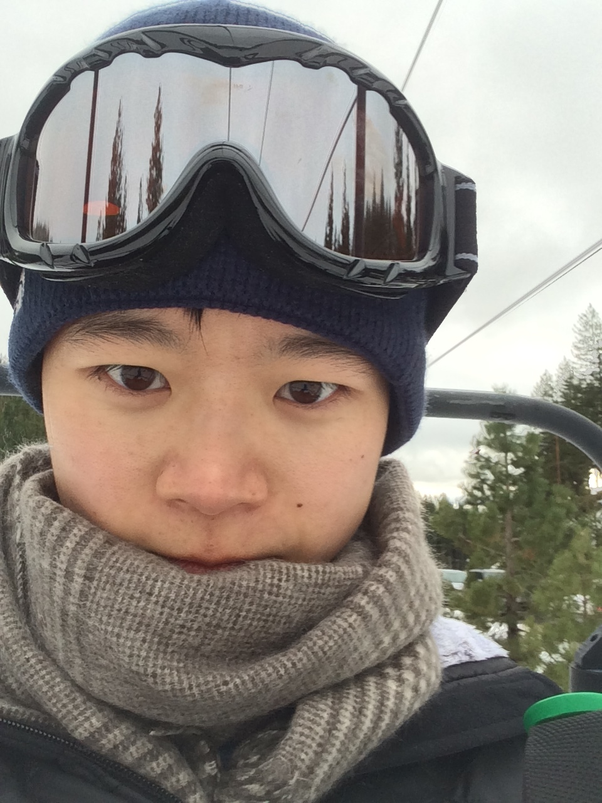

胡晨晨（Linn）
本地化人 | 语言学家 | 旅行者 | 菜鸟网页设计师 | 电台主持 | 吉他手 | 骑手
我的中文名字叫胡晨晨。林是我的原本的姓氏。我把林（Linn）作为英文名是为了纪念我的家族历史和我的祖辈所经历的艰难岁月。我来自丽水，那是中国东部的一个美丽小城。
现在我在蒙特雷国际研究院学习翻译与本地化管理。来蒙特雷之前，我在广州读研究生，学习口译。
我喜欢美食、音乐、旅行和古怪好玩的事物。我最喜欢的运动是马术，也就是骑马。我曾经参加过一个独特婚礼的马队。我的马“赤兔”和我一起在城里转了一大圈！